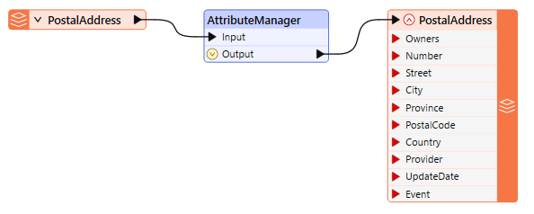
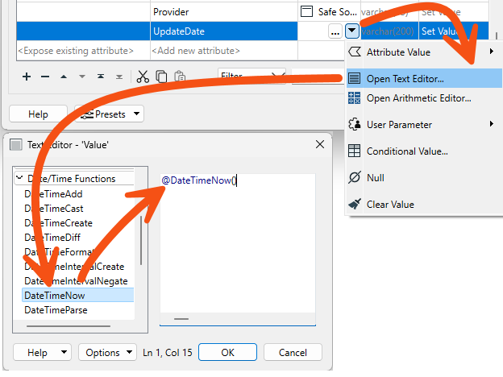
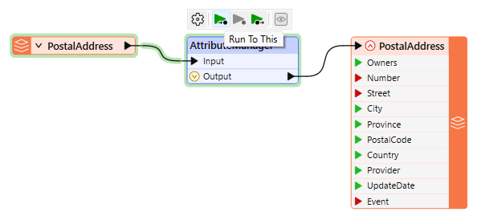
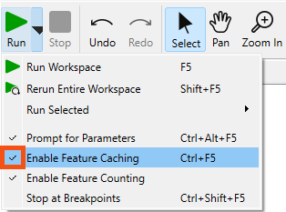

After completing this lesson, you'll be able to:
City councilors have voted to amend noise control laws, and residents living in affected areas must be informed of these changes.
Your manager recommended you take on the task of finding all affected addresses. There's a tight deadline, and at least three city councilors are watching you work. The pressure is on, and it's up to you to deliver!
This exercise is the first part of the project. You know that the address database for the city is stored in an Esri Geodatabase whose schema matches the Local Government Information Model PostalAddress table.
However, you are told that the software used to carry out automated bulk mailings requires addresses stored in an Excel spreadsheet using a completely different schema.
So, your first task is to create a workspace that converts addresses from Geodatabase to Excel, mapping the schema at the same time.
1) Open the starting workspace
Open the starting workspace in FME Workbench (2024.0 or later).
2) Add an AttributeManager Transformer
We can start by mapping the schema from the reader to the writer. As you'll have noticed, the two do not currently match.
So, place an AttributeManager between the PostalAddress reader feature type and the PostalAddress writer feature type.

Its parameters will look like this:
3) Remove Unwanted Attributes
Firstly, let's clear up the reader schema by removing some of the unwanted attributes.
Click on the following attributes and either press the Delete key or click the - button on the dialog to remove them:
4) Rename Attributes
Several source attributes can be written to the output as they are but must be renamed first.
In the AttributeManager, rename the following:
Because the AttributeManager is connected to the writer feature type, you should be able to select the Output Attribute field from a drop-down list instead of typing it in; this connection is indicated by the right-pointing arrow and cylinder icon.
5) Create an Attribute (Provider)
Two attributes on the output (Provider and UpdateDate) are new and cannot be copied from the source data. They must be created.
In the AttributeManager, create the new attribute "Provider" by typing in the <Add new Attribute> cell in the last row. Because the attribute exists on the output schema, you can again select it from the drop-down list.
Set a fixed value such as your organization name, "Safe Software," or "City of Interopolis." You may also want to set the data Type.

6) Create an Attribute (UpdateDate)
Now create the new attribute "UpdateDate". Rather than hard-coding a value, click the drop-down arrow in the Attribute Value field and choose Open Text Editor.
In the text editor, locate the Date/Time Function called DateTimeNow and double-click to place it in the editor:

By default, it creates a datetime in FME Standard Date/Time format, which is fine for us, so click OK to accept this.
7) Create an Attribute (Owners)
Notice that there is an Owners field on the output, but there are two owner fields (OWNERNM1 and OWNERNM2) on the input. We must concatenate the two input fields to set the output attribute; that's simple enough.
In the AttributeManager parameters dialog, create a new attribute called Owners. In the Attribute Value column for this attribute, click the drop-down arrow and choose Open Text Editor.
In the text editor, open the FME Feature Attributes section on the left-hand menu. Locate the OWNERNM1 and OWNERNM2 attributes and double-click them, in turn, to add them to the editor window. In the editor window, click between the two attributes and press the spacebar to add a space character.
@Value(OWNERNM1) @Value(OWNERNM2)
You can either ignore the trailing space generated on records without a second owner (it won't affect the output's usefulness) or use a TrimRight function to remove it:
@TrimRight(@Value(OWNERNM1) @Value(OWNERNM2))
Click OK to close the editor dialog.
8) Remove Attributes
Now that we have the Owners field, we can remove the attributes OWNERNM1 and OWNERNM2. However, the order of operations is now essential. Owners MUST be created in the parameters dialog before OWNERNM1 and OWNERNM2 are removed.
To do so, click the newly created Owners field. Use the up-arrow button (^) on the dialog to move it above OWNERNM1.
Then remove OWNERNM1 and OWNERNM2. The dialog will now look like this:
Click OK to close the AttributeManager parameters.
9) Run To the AttributeManager
It's time to run the workspace to ensure everything we've done produces the correct result. Ensure feature caching is turned on, then run the workspace by clicking on the AttributeManager transformer and selecting Run to This:

This will run the translation up to this transformer but not write any output.
If you have continued on from the last course in FME Form Basic, you'll have to turn feature caching back on. Click the Run menu and ensure Enable Feature Caching is checked.

Inspect the AttributeManager's Output cache to confirm that the procedure worked as expected: